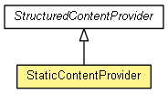

org.eclipse.net4j.util.ui
Class StaticContentProvider
java.lang.Object
 org.eclipse.net4j.util.ui.StructuredContentProvider<Object>
org.eclipse.net4j.util.ui.StaticContentProvider
org.eclipse.net4j.util.ui.StructuredContentProvider<Object>
org.eclipse.net4j.util.ui.StaticContentProvider
- All Implemented Interfaces:
- EventListener, IContentProvider, IStructuredContentProvider, IListener
- public class StaticContentProvider
- extends StructuredContentProvider<Object>

| Methods inherited from class org.eclipse.net4j.util.ui.StructuredContentProvider |
connectInput, disconnectInput, dispose, getDisplay, getInput, getItalicFont, getViewer, inputChanged, notifyEvent, refreshElement, refreshSynced, refreshViewer, revealElement, selectElement, updateLabels |
| Methods inherited from class java.lang.Object |
clone, equals, finalize, getClass, hashCode, notify, notifyAll, toString, wait, wait, wait |
StaticContentProvider
public StaticContentProvider(Object[] elements)
StaticContentProvider
public StaticContentProvider(Collection<?> elements)
StaticContentProvider
public StaticContentProvider(Class<Object> enumClass)
getElements
public Object[] getElements(Object inputElement)
Copyright (c) 2004 - 2012 Eike Stepper (Berlin, Germany) and others.